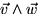
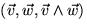
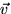
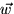
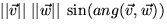
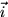
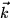

A l'espai hi ha un altre producte de vectors que necessitarem, i que també opera entre dos vectors, però dóna per resultat un tercer vector. Aquest producte el designarem per . El resultat del producte vectorial de dos vectors és un tercer vector perpendicular simultàniament a tots dos, i tal que el triedre  és dextrogir (és a dir que un vis alineat amb que giri des de  a  pel camí més curt es mourà en la direcció en que apunta . De tota manera, usarem aquesta operació sobre tot per a calcular un vector perpendicular a dos donats. No cal que pareu ara massa esment a la tria d'orientació al resultat.
La norma del vector producte vectorial es defineix com , que és l'àrea del paralelogram que té a i a per costats. En particular el producte vectorial és zero quan els dos vectors estan alineats.
Podem calcular les components del producte vectorial de dos vectors amb les següents fórmules:
Per recordar aquestes fórmules hom pot recordar que si , i  denoten els vectors unitaris dels tres eixos coordenats, aleshores formalment podem escriure
on en expandir el determinant obtindrem les mateixes fórmules que
hem donat abans.